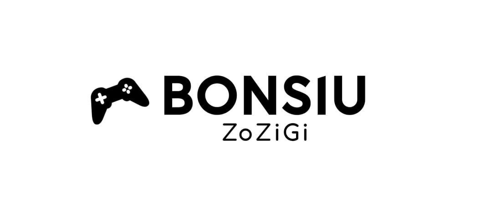

- 게임 설명 및 플레이 방법
- 플레이어블 캐릭터 목록
- 적 캐릭터 목록
뽄조의 플레이어블 캐릭터는 현재 2명으로, 땡땡이와 전동훈이 있다.
<레벨별 능력치 표>
| 레벨 |
최대 체력 |
공격력 |
최대 마나 |
필요 경험치 |
필요 경험치(누적) |
| 1(튜토리얼) |
150 |
15 |
10 |
- |
- |
| 2 |
250 |
20 |
20 |
1 |
1 |
| 3 |
360 |
25 |
30 |
15 |
16 |
주요 능력치에 대한 설명은 다음과 같다.
체력/최대 체력: 적의 공격을 버텨낼 수 있는 능력이다. 최대 체력 이상으로 체력을 회복할 수 없다.
공격력: 적에게 주는 데미지를 결정한다. 기본 공격과 스킬 피해는 일반적으로 공격력의 영향을 받는다.
마나/최대 마나: 스킬을 사용하기 위해 필요한 자원이다. 최대 마나 이상으로 마나를 회복할 수 없다.
분노: 궁극기를 사용하기 위해 필요한 자원이다. 턴마다 1씩 충전되며 일정 수치 이상 되면 궁극기를 사용할 수 있다.
-
땡땡이
<스킬 목록>
-
전동훈
해금 레벨: 3
<스킬 목록>
뽄조 플레이하기